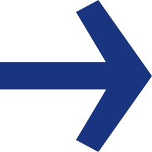
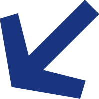

Eigen elementen · per vlak het logo plus hooguit twee
De parkeerdersHet beeldmerk als hoofd, altijd aqua. Staan altijd op een lijn.
loperzwaaierwijzerdanserspringershopperjuichergastheer wijstgastheer zwaait
Op elke grondNavy lijf op licht, wit lijf op navy, één kleur navy op aqua.
De stemDe halve boog opent een boodschap. Nooit gesloten, nooit rechts.
hoogte = het tekstbloklijn = 1/25 van de hoogteafstand tot de tekst = 0,3 x de hoogte
Het vakEen parkeerdek van bovenaf. Eén vak is van jou.
Bubbel en pijlDe bubbel staat altijd rechtop. De hoekige pijl wijst, in stappen van 45°.


bubbel draaienpijl in een cirkel